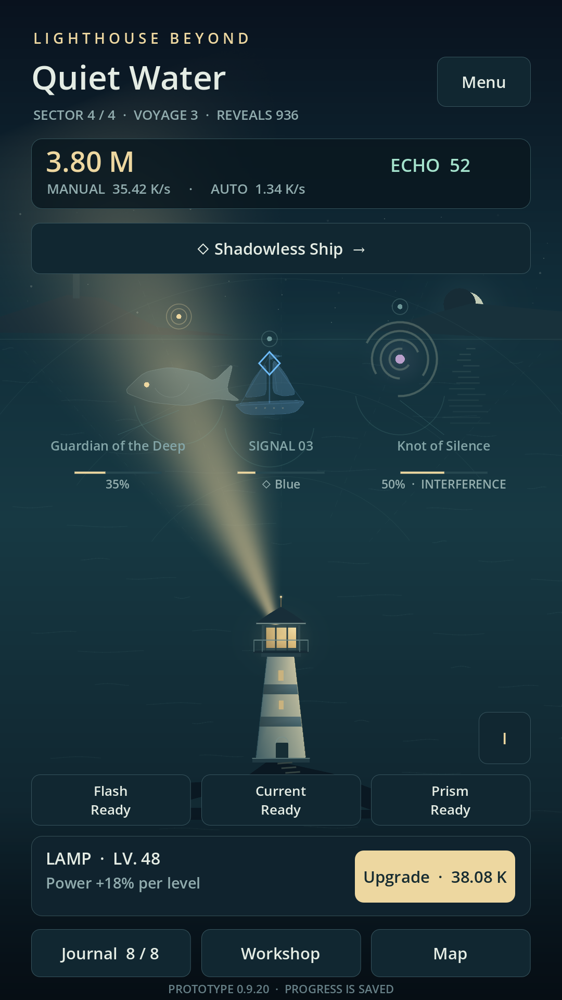
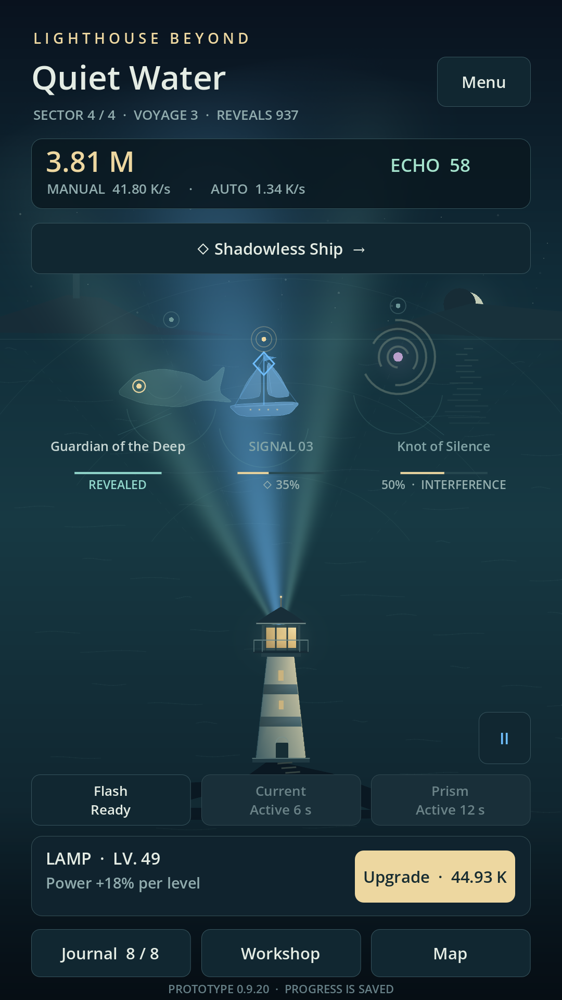
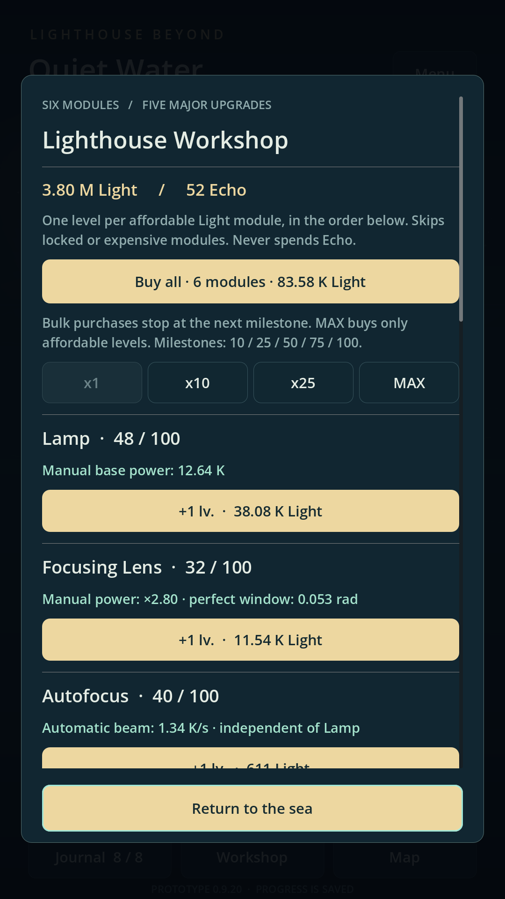
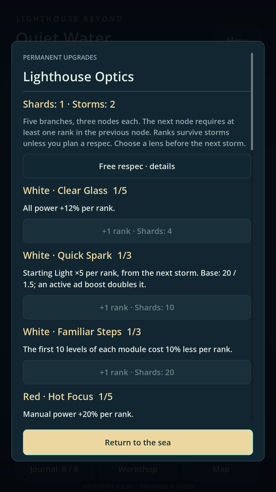
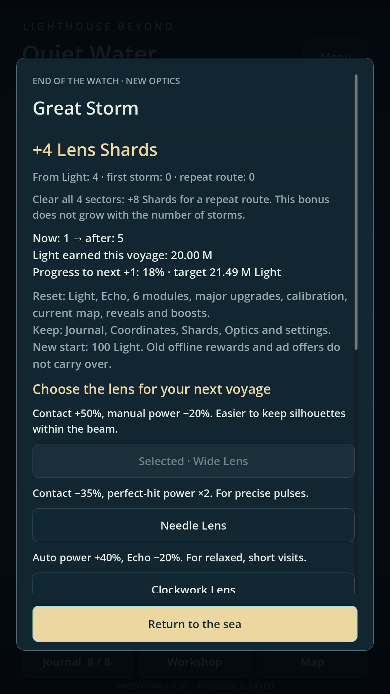
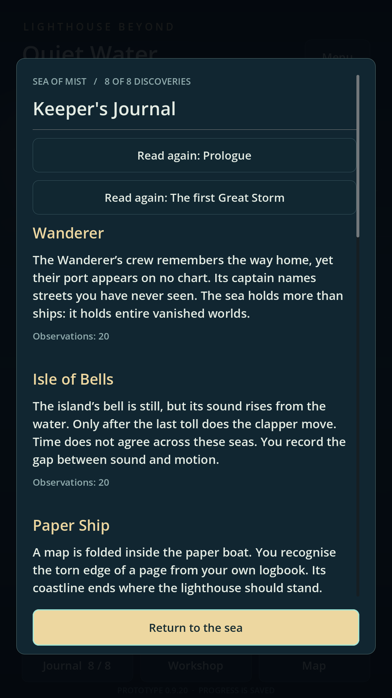
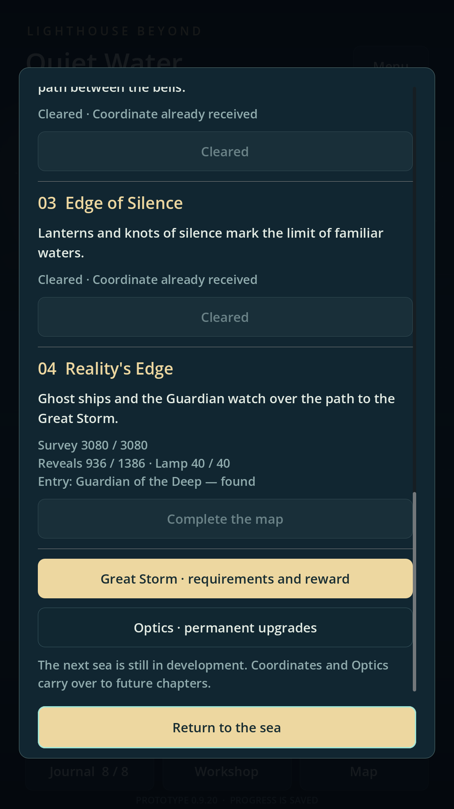
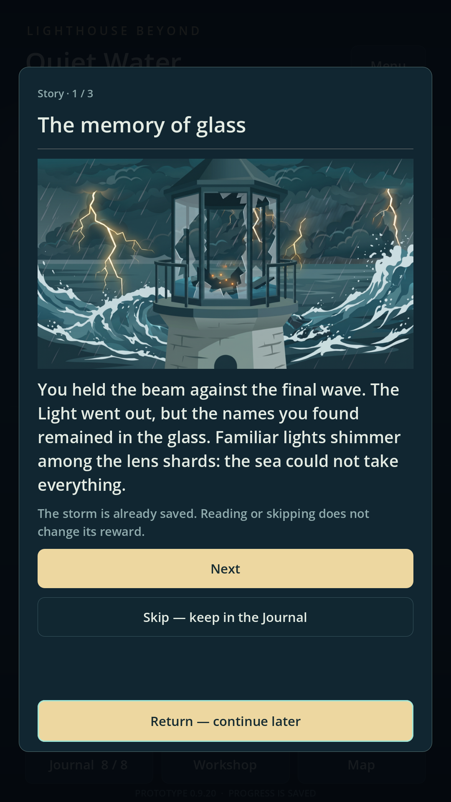

Early access
Early access is on the horizon
Lighthouse Beyond Idle is getting ready for early access on Android. Soon, the sea will welcome its first keepers. Here’s a look at the journey waiting for you.

Guide a lighthouse beam, reveal silhouettes in the mist and gather Light to improve your lighthouse. The Workshop develops your manual beam and automation, while the blue spectrum reveals reflections hidden from ordinary light.
Little by little, the sea becomes a story. Unusual encounters leave entries in your Journal, the map leads to new sectors, and a Great Storm begins another voyage. The Shards you keep help you develop Optics and return to the lighthouse with new possibilities.
Half a minute by the lighthouse
Watch actual gameplay: objects appearing, a spectrum change, a Lamp upgrade, Optics and preparations for a storm. This is the same recording we prepared for our store listings.
English interface · 30 seconds of gameplay
The video could not be loaded. Open video ↗
Take a closer look
Screenshots prepared for Google Play and RuStore. Select an image to open the full-size version.








See you on the shore
During early access, your experiences will help us refine the pace of each voyage, the controls and the stories of the sea. We’ll announce the date and share Google Play and RuStore links here when access opens.